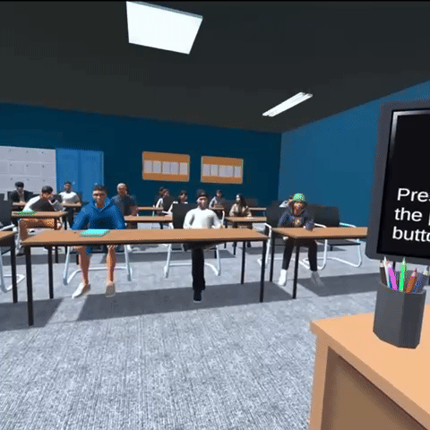
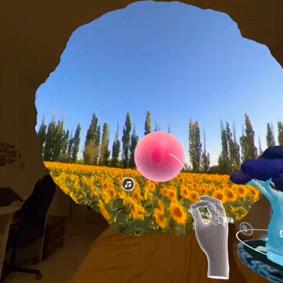

Hey, I’m Seonjeong! 👋
Design Engineer based in London, working at the intersection of AI & XR.
I work across research, design, and engineering to prototype, validate, and ship immersive experiences, from production VR/MR projects to research-led experiments.
📍 Currently building immersive experiences at @NoGhost
🪄 Recent Experiments


✨ Selected Work

8pm and the Cat
AI-driven VR film that generates personalised narratives in real-time using gaze, voice, and LLMS. Selected for Venice Immersive 2025 and BFI Expanded 2025
#AI #VR #Storytelling
Public Speaking in VR Research
A research-led VR app for educing foreign language anxiety, tested with 40+ participants. Published in Frontiers in Virtual Reality and presented at IEEE VR 2023
#VR #Research
PinPoint
A multi-platform spatial computing system that delivers contextual briefings through AR glasses, built on Snap Spectacles, Snap Cloud, and a companion web app. Finalist, XRCC 2026
#Spectacles #AR #AI
Baobab Diary
A mixed-reality journaling app where memories live in physical space, exploring embodied interaction and AI-assisted reflection. Winner, 2024 Korea Metaverse Developer Contest
#MR #AI #Worlds